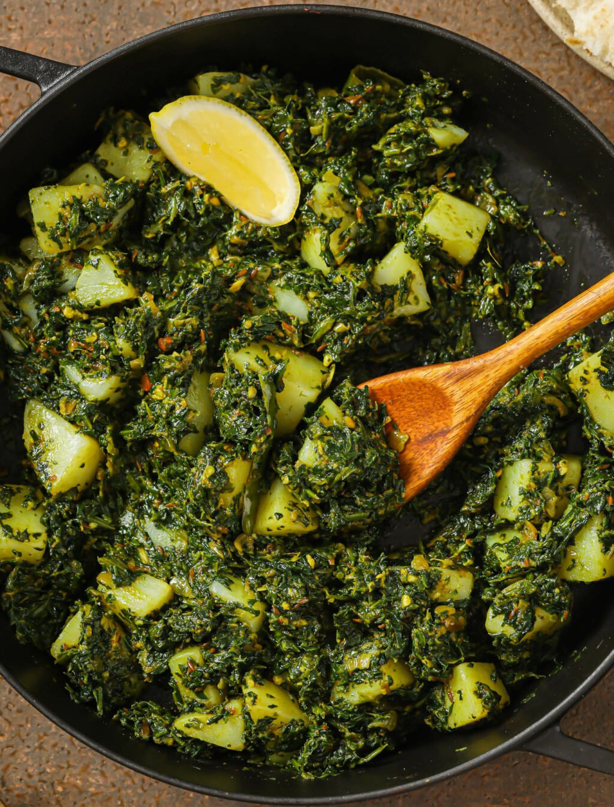

Home
Spinach with Mushrooms

Description
This dish goes great with lentils and rice or flat bread. This
recipe is ayurvedic.
Ingredients
- 2 tablespoons clarified butter (ghee)
- 3 cloves garlic, chopped
- 1 pound fresh spinach, washed and finely chopped
- 1 pound mushrooms, washed and sliced
- 4 large potatoes, peeled and cubed
- 1 medium tomato, quartered
- 1 teaspoon salt
Steps
- In a frying pan, heat the clarified butter over medium heat.
- Add the garlic and cook until light brown.
- Add the spinach and toss until the spinach wilts.
- Add the mushrooms, potatoes, tomato pieces and salt.
- Cook until everything softens, about 30 min.